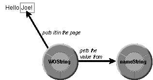

Table of Contents
Table of Contents
 Previous Section
Previous Section
Table of Contents
Previous Section
The files for the Hello component establish how to generate the personalized greeting. The template for the Hello page contains the following HTML elements:
<HTML> <HEAD> <TITLE>Hello World!</TITLE> </HEAD> <BODY> Hello <WEBOBJECT NAME = "NAME_STRING"></WEBOBJECT>! </BODY> </HTML>
The declarations file contains the following declaration of a WOString object to substitute the user's name for the NAME_STRING WEBOBJECT element:
NAME_STRING: WOString {value = nameString};
WOString objects, like WOTextField objects, have a value attribute. The WOString is responsible for getting the value in nameString and putting it in the corresponding page.

Figure 8 Getting a Value and Displaying it in a Page
The script for the second page contains only one line:
id nameString;
The nameString variable must be declared so it can be associated with the NAME_STRING element in the template file. Recall that nameString is set from the Main component in the sayHello method.
 Next Section
Next Section